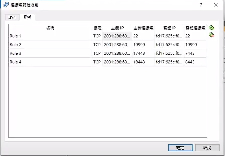
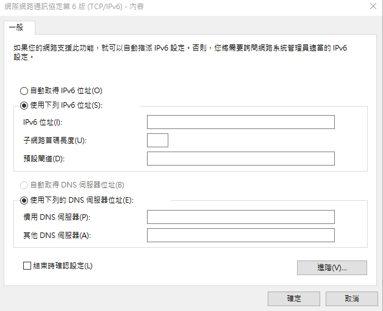

Vrep虛擬主機設置 <<
Previous Next >> CoppeliaSim
WEEK15~17
ipv6設定並連結上近端
cd /etc/apt/apt.conf.d
sudo vi proxy.conf
#密碼為kmol2020
cd /etc/netplan
sudo vi 00-installer-config.yaml
打入
Acquire::http::Proxy "http://[2001:288:6004:17::XX]:3128";
esc :wq儲存
進行更新
sudo apt update
進行ifconfig
ifconfig
sudo apt install net-tools
進入 /etc/netplan 並且更改00-installer-config.yaml內容
cd /etc/netplan
sudo vi 00-installer-config.yaml
將內容改成
# This is the network config written by 'subiquity'
network:
ethernets:
enpes3:
dhcp4: true
dhcp6: true
nameservers:
addresses:
- 2001:b000:168::1
version: 2
主機IP為2001:288:6004:17:2020:1::71XX (末兩碼為自己座號)
客體IP 用ifconfig查詢

進入cd2020pj1
將wsgi.py的host都改成ifconfig查到客體IP
開啟近端
python3 wsgi.py
將ipv6位址填入2001:288:6004:17:2020:1::71XX(座號)

將防火牆及proxy關閉就能用自己的電腦連結
Vrep虛擬主機設置 <<
Previous Next >> CoppeliaSim